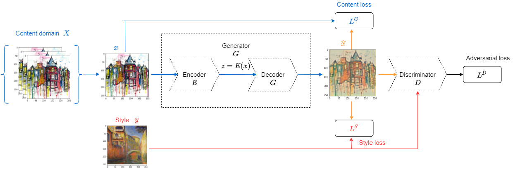
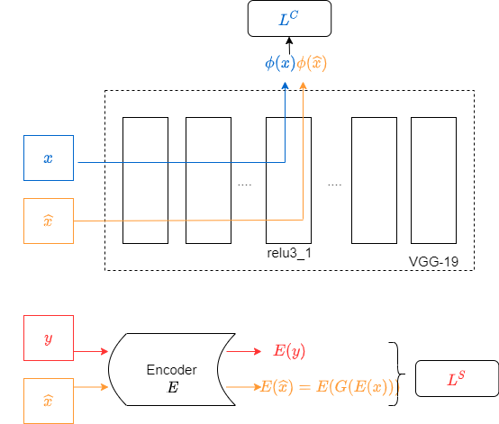
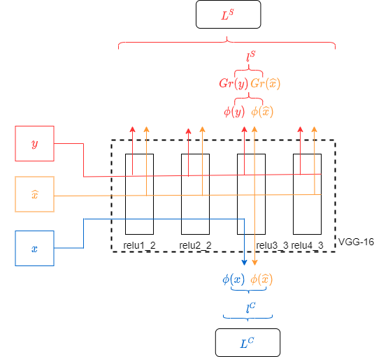
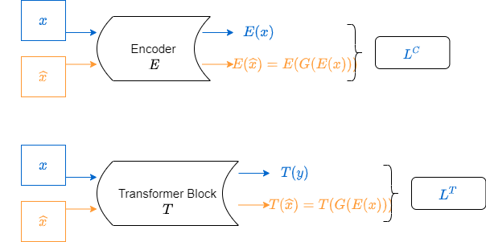

\documentclass{article}
\usepackage[utf8]{inputenc}
\usepackage{graphicx}
\usepackage{amsmath}
\usepackage{amsfonts}
\usepackage{amssymb}
\usepackage{bbm}
\usepackage{bbold}
\usepackage{biblatex}
\title{Modified-loss-functions-of-GAN-model-for-image-style-transfer-problem}
\begin{thebibliography}{9}
\bibitem{1}
Zhuoqi Ma, Jie Li, Nannan Wang, Xinbo Gao,
Semantic-related image style transfer with dual-consistency loss.,
Neurocomputing,
Volume 406,
2020,
Pages 135-149,
ISSN 0925-2312,
https://doi.org/10.1016/j.neucom.2020.04.027.
\bibitem{2}
Sanakoyeu, Artsiom, and Kotovenko, Dmytro, and Lang, Sabine, and Ommer, Bj\"orn,
A Style-Aware Content Loss for Real-time HD Style Transfer,
Proceedings of the European Conference on Computer Vision (ECCV),
2018
\bibitem{3}
Justin Johnson, Alexandre Alahi, Li Fei-Fei,
Perceptual Losses for Real-Time Style Transfer and Super-Resolution,
ArXiv,
2016
\bibitem{4}
Jun-Yan Zhu and T. Park and Phillip Isola and Alexei A. Efros,
Unpaired Image-to-Image Translation Using Cycle-Consistent Adversarial Networks,
2017 IEEE International Conference on Computer Vision (ICCV),
2017, Pages 2242-2251.
\end{thebibliography}
\begin{document}
\section{GAN model for Image Style Transfer Problem}
Let $X, y$ denote the content domain and style respectively. Each content image $x\in X$ is paired with style $y$ to make up a image pair $\{x, y\}$.
The GAN model for Image Style Transfer Problem usually contains three modules: an encoder $E$, a decoder $G$ and a discriminator $D$ (as shown in Fig \ref{fig:gan}).
Firstly, for a pair image $\{x, y\}$, the encoder $E$ encodes $x$ into $z = E(x)$. Then, decoder $G$ generates the stylized output $\hat{x} = G(z) = G(E(x))$.

Image Style Transfer problem refers to rendering an image in certain artistic style. To generate this through the determination of the loss function including style loss $L^S$ and content loss $L^C$.
The full object of GAN model for image style transfer problem:
\begin{equation}
L(E, G, D) = L^S + \alpha*L^C + \beta*L^{GAN}
\end{equation}
Optimizing the network by solving the following optimization problem:
\begin{equation}
E, G = arg \min_{E, G} \max_{D} L(E, G, D)
\end{equation}
Recent studies have focused on improving the relationship between object and style. There are many proposals for the loss function to improve this.
\section{Dual consistency loss}
Ma el al. \cite{1} propose a dual-consistency loss to train an encoder decoder network with adversarial discriminator. The dual-consistency loss encourages the output to be semantically and stylistically consistent with subject-related content and style image pair. Proposed dual-consistency loss shown as in Fig \ref{fig:dual}.

\begin{equation}
L^C (E, G) = \frac{1}{CHW} ||\phi(\hat{x}) - \phi(x)||^2_2
\end{equation}
\begin{equation}
L^S(E, G) = \mathbb{E}_{x\sim pX(x)}\biggl[\frac{1}{d}||E(y) - E(\hat{x})||^2_2\biggr]
\end{equation}
where:
\begin{itemize}
\item $\phi(.)$ is the activation of the relu 3_1th layer of VGG19 network.
\item $d$ is the dimensions of latent vector.
\end{itemize}
\section{Perceptual loss}
Johnson el al \cite{3} propose the use of perceptual loss functions for training feed-forward networks for image transformation tasks (shown as Fig \ref{fig:per}). Authors combine the benefits between defining and optimizing perceptual loss functions based on high-level features extracted from pre-trained networks to generate high-quality images.

\begin{equation}
L^C (E, G) = \frac{1}{CHW} ||\phi(\hat{x}) - \phi(x)||^2_2
\end{equation}
\begin{equation}
L^S(E, G) = \sum_{j} ||Gr_j(\hat{x}) - Gr_j(y)||^2_F
\end{equation}
where:
\begin{itemize}
\item $\phi(.)$ is the activation of the specified layer of VGG16 network.
\item $Gr_j(.)$ is gram matrix of jth layer, which given by:
\begin{equation}
Gr_j(x) = \frac{1}{CHW}\sum_{h=1}^{H}\sum_{w=1}^{W}\phi(x)_{h, w, c}*\phi(x)_{h, w, c'}
\end{equation}
\end{itemize}
\section{A Style-Aware Content Loss}
Sanakoyeu el al \cite{2} propose a quantitative measure for evaluating the quality of a stylized image which known as a style-a ware content loss (shown as Fig \ref{fig:aware}).

\begin{equation}
L^C(E, G) = \mathbb{E}_{x\sim pX(x)}\biggl[\frac{1}{d}||E(x) - E(\hat{x})||^2_2\biggr]
\end{equation}
\begin{equation}
L^T(E, G) = \mathbb{E}_{x\sim pX(x)}\biggl[\frac{1}{CHW}||T(x)-T(\hat{x})||^2_2\biggr]
\end{equation}
\end{document}